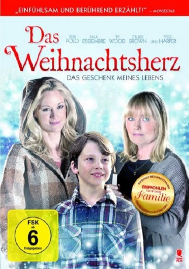

#5141 Das Weihnachtsherz - Das Geschenk meines Lebens
Alternativ: The Christmas Heart
 
 IMDB-Wertung: 6.1 / 10
IMDB-Wertung: 6.1 / 10  Metascore: 0
Metascore: 0 
Weihnachtsabend mitten in Amerika in einer kleinen Stadt. Alle sind schon in heller Aufregung, denn schon seit vielen Jahren ist es Tradition, auf der Straße Kerzen aufzustellen und so die ganze Stadt mit wundervollen Weihnachtslichtern zu erhellen. Aber für eine der Familien ist es ein ganz besonderer Tag. Denn Matt, ihr Junge, ist krank und wartet schon lange auf eine dringende Herztransplantation. Als seine Eltern Ann und Mike an diesem stürmischen Abend einmal wieder darauf warten, dass ihr Sohn ein Spenderherz bekommt, verstehen die Nachbarn plötzlich, dass ihre stimmungsvollen Weihnachtskerzen vielleicht auch einen viel tieferen Sinn haben könnten.
Jahr: 2012
Dauer: 86 Minuten
FSK:
Land: USA Studio: Hallmark Channel, TheTonspuren: DTS - ,
Untertitel: Deutsch,
Auflösung: 1080p (1920x1080) Größe: 4352 MB
Genre: Drama, Weihnachten
Regisseur: Gary Yates
Drehbuch: James V. Hart
Soundtrack:
Darsteller:
 Teri Polo als Ann Norman
Teri Polo als Ann Norman- Paul Essiembre als Mike Norman
- Ty Wood als Matt Norman
 Tess Harper als Elizabeth
Tess Harper als Elizabeth John B. Lowe als Don
John B. Lowe als Don- Samantha Kendrick als Karen
 Adam Hurtig als Jimmy
Adam Hurtig als Jimmy- Arden Alfonso als Nicki
 Stephen Eric McIntyre als John
Stephen Eric McIntyre als John- Aisha Alfa als Nurse Detroit
- Adriana O'Neil als Nurse Cleveland
- Stan Lesk als Wino
- Talia Pura als Neighbor #4
 Aaron Hughes als Police Officer
Aaron Hughes als Police Officer- Cruise Brown als Tommy Norman
- Susan Kelso als Yvonne
- Blake Taylor als Bob
- Cherissa Richards als Dr. Shirazi
- Mike Bell als Ray
- Jess Mal Gibbons als Miller
- Paul Magel als Dr. Brady
- James Juce als Bartender
 Ernie Pitts als Coach
Ernie Pitts als Coach- Kelly Wolfman als Traci Collins
- Tim Nhlazane als Wiggy
- Harry Nelken als Neighbor #1
- Robert Huculak als Neighbor #2
- Joanne Rodriguez als Neighbor #3
Datei: X:\2012(N-Z)\Weihnachtsherz - Das Geschenk meines Lebens, Das (2012, FSK, 1920x1080).mkv seit 23.12.2016
Festplatte: HD 2012(N-Z)-2013(A-H)
 Es gibt insgesamt 138 Filme in der Gruppe '2012(N-Z)'
Es gibt insgesamt 138 Filme in der Gruppe '2012(N-Z)'